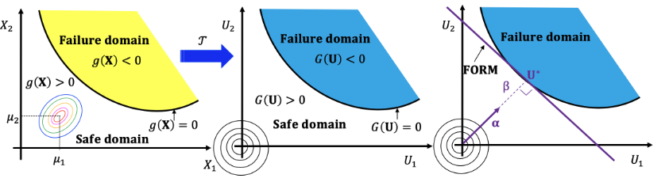

Reliability¶
Reliability of a system refers to the assessment of its probability failure (i.e the structure no longer satisfies some performance measures), given the model uncertainty in the structural, environmental and load parameters. Given a vector of random variables \(\textbf{X}=\{X_1, X_2, \ldots, X_n\} \in \mathcal{D}_\textbf{X}\subset \mathbb{R}^n\), where \(\mathcal{D}\) is the domain of interest and \(f_{\textbf{X}}(\textbf{x})\) is its joint probability density function then, the probability that the system will fail is defined as
where \(g(\textbf{X})\) is the so-called performance function. Formulation of reliability methods in UQpy is made on the standard normal space \(\textbf{U}\sim \mathcal{N}(\textbf{0}, \textbf{I}_n)\) which means that a nonlinear isoprobabilistic transformation from the generally non-normal parameter space \(\textbf{X}\sim f_{\textbf{X}}(\cdot)\) is required (see module Tansformations). The performance function in the standard normal space is denoted \(G(\textbf{U})\).
This module contains functionality for all the structural reliability methods supported in UQpy.
The module currently contains the following classes:
TaylorSeries: Class to perform reliability analysis using FORM/SORM.SubsetSimulation: Class to perform reliability analysis using subset simulation.
Taylor Series¶
TaylorSeries is a class that calculates the reliability of a model using the First Order Reliability Method (FORM) or the Second Order Reliability Method (SORM) based on the first-order and second-order Taylor series expansion approximation of the performance function, respectively.
In FORM, the performance function is linearized according to
where \(\textbf{U}^\star\) is expansion point, \(G(\textbf{U})\) is the performance function evaluated in the standard normal space and \(\nabla G_{|_{\textbf{U}^\star}}\) is the gradient of \(G(\textbf{U})\) evaluated at \(\textbf{U}^\star\). The probability failure can be calculated by
where \(\Phi(\cdot)\) is the standard normal cumulative distribution function and \(\beta_{HL}=||\textbf{U}^*||\) is the norm of the design point known as the Hasofer-Lind reliability index calculated with the Hasofer-Lind-Rackwitz-Fiessler (HLRF) algorithm.
In SORM the performance function is approximated by a second-order Taylor series around the design point according to
where \(\textbf{H}\) is the Hessian matrix of the second derivatives of \(G(\textbf{U})\) evaluated at \(\textbf{U}^*\). After the design point \(\textbf{U}^*\) is identified and the probability of failure \(P_{f, \text{form}}\) is calculated with FORM a correction is made according to
where \(\kappa_i\) is the i-th curvature.
The TayloreSeries class is the parent class of the FORM and SORM classes that perform the FORM and SORM, respectively. These classes can be imported in a python script using the following command:
>>> from UQpy.Reliability import FORM, SORM
-
class
UQpy.Reliability.TaylorSeries(dist_object, model, cov=None, n_iter=100, tol=0.001)[source]¶ Perform First and Second Order Reliability (FORM/SORM) methods (1, 2).
This is the parent class to all Taylor series expansion algorithms.
References:
- 1
R. Rackwitz and R. Fiessler, “Structural reliability under combined random load sequences”, Structural Safety, Vol. 22, no. 1, pp: 27–60, 1978.
- 2
K. Breitung, “Asymptotic approximations for multinormal integrals”, J. Eng. Mech., ASCE, Vol. 110, no. 3, pp: 357–367, 1984.
Inputs:
- dist_object ((list of )
Distributionobject(s)): Probability distribution of each random variable. Must be an object of type
DistributionContinuous1DorJointInd.
- dist_object ((list of )
- model (Object or a callable ):
The numerical model. It should be of type RunModel (see
RunModelclass) orKrig(seeSurrogatesclass) object or a callable.
- seed (ndarray):
The initial starting point for the Hasofer-Lind algorithm. If provided, it should be a point in the parameter space X. Otherwise, the algorithm starts from point \((0, 0, \ldots, 0)\) in the uncorrelated standard normal space U.
Default: \((0, 0, \ldots, 0)\)
- cov (ndarray):
The distorted correlation structure (\(\mathbf{C_z}\)) of the standard normal random vector Z. If the correlation structure in the parameter space is given (\(\mathbf{C_x}\)) then the method
distortion_x_to_zfrom theForwardclass in theNatafclass should be used before running FORM to obtain \(\mathbf{C_z}\).Default: The
identitymatrix.
- cov (ndarray):
The correlation structure (\(\mathbf{C_X}\)) of the random vector X .
Default: The
identitymatrix.
- tol (float):
Convergence threshold for the Hasofer-Lind algorithm.
Default: 0.001
- n_iter (int):
Maximum number of iterations for the Hasofer-Lind algorithm.
Default: 100
FORM¶
The FORM class can be used to estimate the reliability of a system using the first order reliability method. For example, consider the simple structural reliability problem defined in a two-dimensional parameter space consisting of a resistance \(R\) and a stress \(S\). The failure happens when the stress is higher than the resistance, leading to the following limit-state function:
The two random variables are independent and normally distributed according to \(R \sim N(200, 20)\) and \(S \sim N(150, 50)\). The probability of failure in this case is estimated with MCS to be 0.0127. In order to estimate the probability of failure using FORM we simply type in a python script:
>>> from UQpy.RunModel import RunModel
>>> from UQpy.Distributions import Normal
>>> from UQpy.Reliability import FORM
>>> dist1 = Normal(loc=200, scale=20)
>>> dist2 = Normal(loc=150, scale=10)
>>> RunModelObject = RunModel(model_script='pfn.py',model_object_name="model") #see RunModel section on how to define the model
>>> Q = FORM(dist_object=[dist1,dist2], model=RunModelObject)
If we want to print the results:
>>> print('Design point in standard normal space: %s' % Q.DesignPoint_U)
Design point in standard normal space: [[-2. 1.]]
>>> print('Design point in parameter space: %s' % Q.DesignPoint_X)
Design point in parameter space: [[160. 160.]]
>>> print('Hasofer-Lind reliability index: %s' % Q.HL_beta)
Hasofer-Lind reliability index: [2.23606798]
>>> print('FORM probability of failure: %s' % Q.Prob_FORM)
FORM probability of failure: [0.01267366]

SORM¶
The SORM class can be used to estimate the reliability of a system using the second order reliability method. For example, consider the problem where the limit state to be a nonlinear function of two (d) random variables
where \(X_1\) follows a normal distribution with mean \(\mu_{X_1}=20\) and standard deviation \(\sigma_{X_1}=7\) and \(X_2\) follows a lognormal distribution with mean \(\mu_{X_2}=7\) and standard deviation \(\sigma_{X_2}=1.4\). In order to estimate the probability of failure using the Sorm class we type in a python script:
>>> from UQpy.RunModel import RunModel
>>> from UQpy.Distributions import Normal, Lognormal
>>> from UQpy.Reliability import SORM
First we need to gfind the parameters of the Lognormal distribution model (see scipy.stats):
>>> mu = np.log(7.) - np.log(np.sqrt(1 + (1.4 / 7.) ** 2))
>>> scale = np.exp(mu)
>>> s = np.sqrt(np.log(1 + (1.4 /7.) ** 2))
Then we define the Distribution objects and the RunModel object:
>>> dist1 = Normal(loc=20., scale=3.5)
>>> dist2 = Lognormal(s=s, loc=0.0, scale=scale)
>>> RunModelObject = RunModel(model_script='pfn.py',model_object_name="model") #see RunModel section on how to define the model
Then we can run SORM
>>> F = SORM(dist_object=[dist1,dist2], model=RunModelObject)
If we want to print the results:
>>> print('FORM probability of failure: %s' % F.Prob_FORM)
FORM probability of failure: [0.02784094]
>>> print('SORM probability of failure: %s' % F.Prob_SORM)
SORM probability of failure: [0.03007141]

{kind=link}